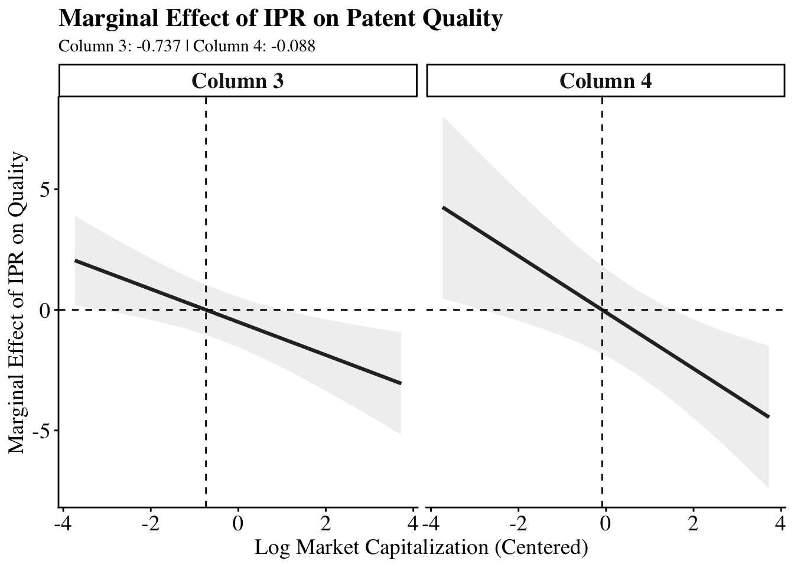
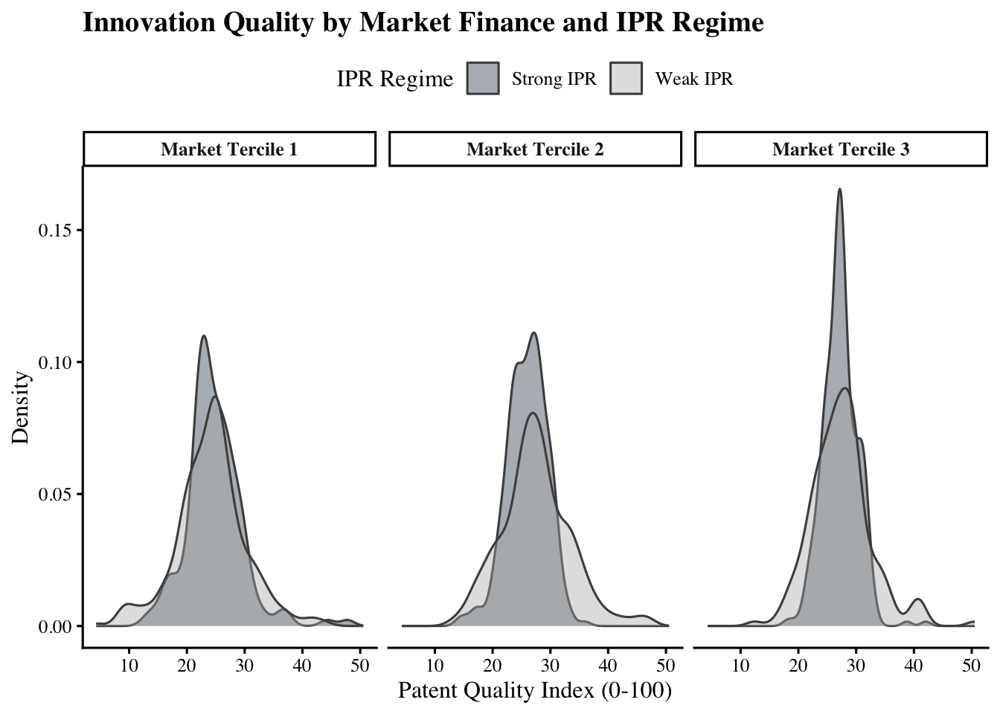
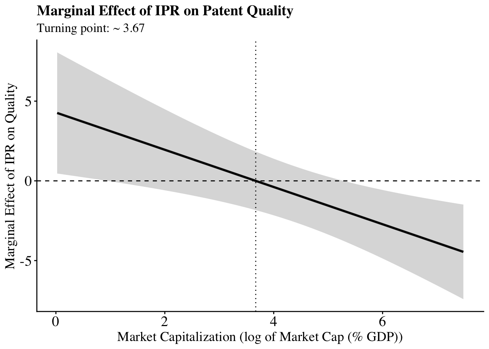
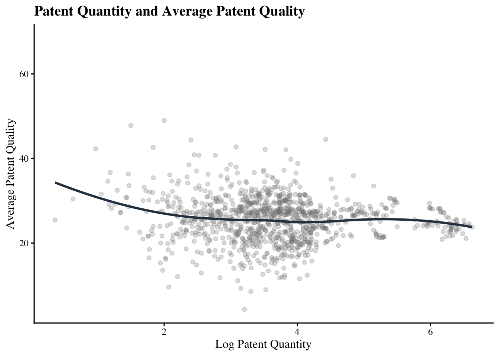
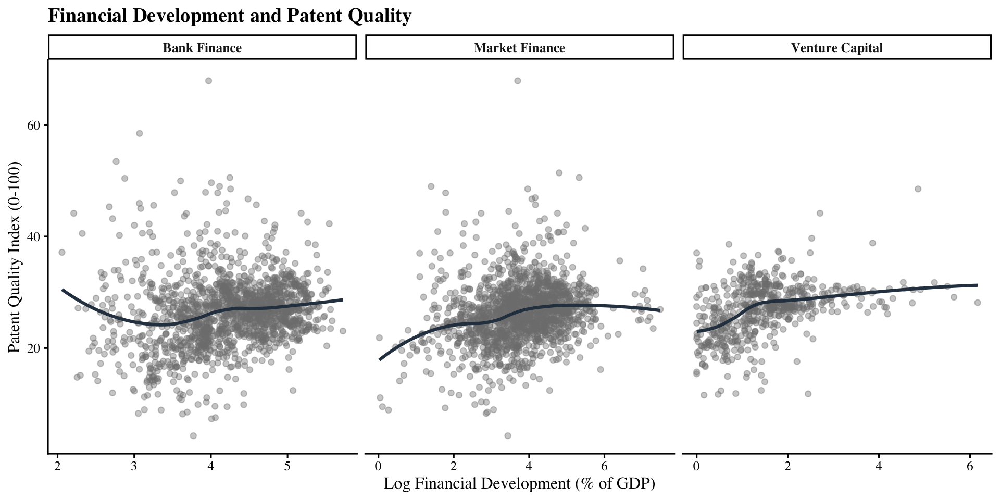
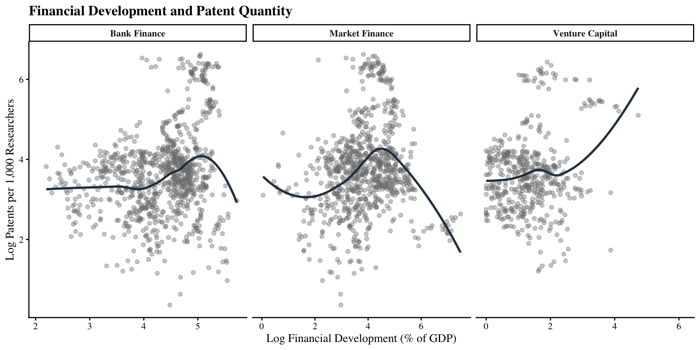
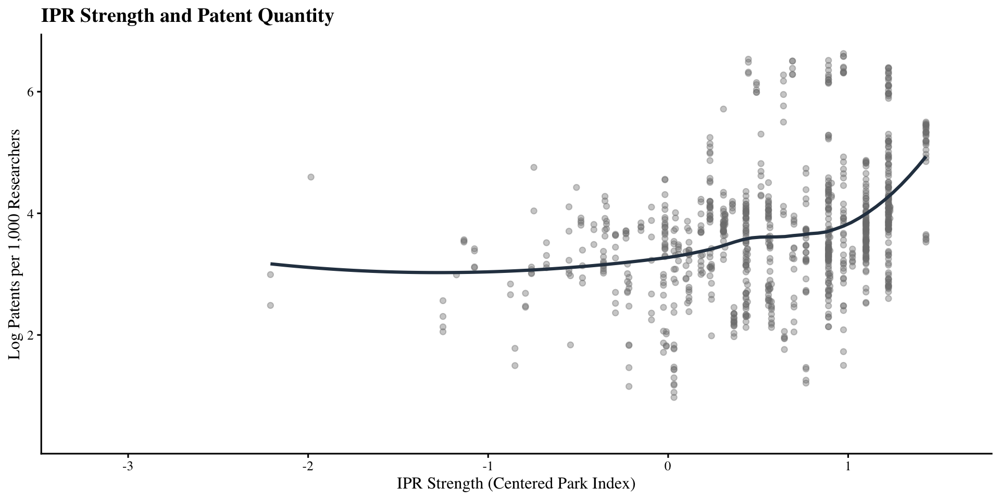
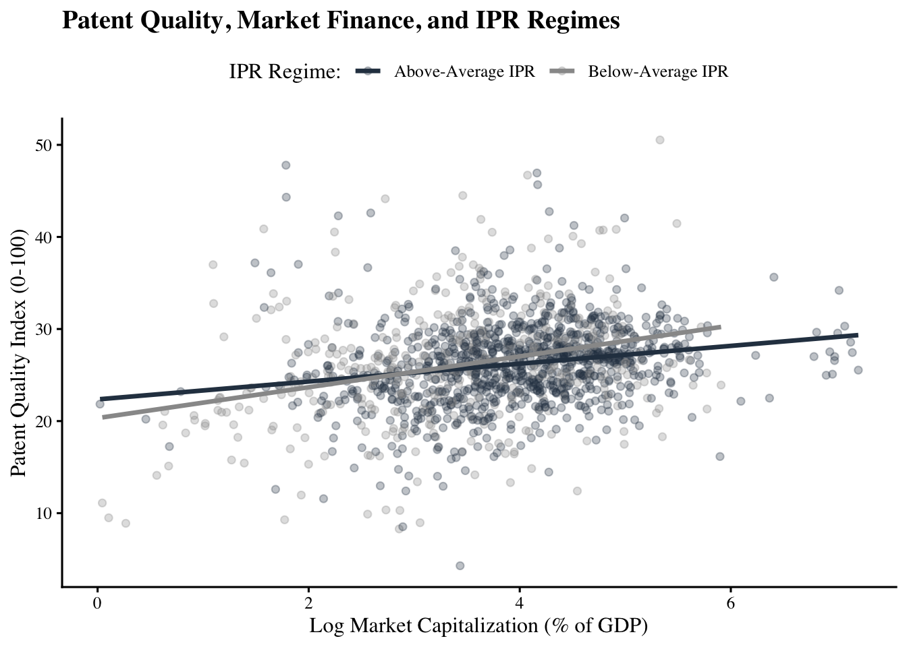

"""
OECD Patent Quality Indicators
normalization, winsorization, and aggregation procedures
"""
import polars as pl
import os
OUTPUT_DIR = ""
os.makedirs(OUTPUT_DIR, exist_ok=True)
# for reproducing, change the file paths to correctly the downloaded data,
# they're too large for me to make this self running
INDICATORS_FILE = "Data/202502_OECD_PATENT_QUALITY_EPO_INDIC.txt"
COHORTS_FILE = "Data/202502_OECD_PATENT_QUALITY_EPO_INDIC_COHORT.txt"
HAN_PATENTS_FILE = "Data/202502_HAN_PATENTS.txt"
HARM_NAMES_FILE = "Data/202502_HARM_NAMES.txt"
FINAL_PATENT_FILE = "OECD_patent_quality_final.parquet"
FINAL_COUNTRY_FILE = "OECD_country_year_final.csv"
WINSOR_VARS = ["family_size", "grant_lag", "bwd_cits", "npl_cits", "claims", "fwd_cits5", "fwd_cits7"]
COMPOSITE_VARS = ["generality", "originality", "radicalness", "quality_index_4", "quality_index_6"]
# load the data
def load_data():
cohorts = pl.read_csv(COHORTS_FILE, separator="|", infer_schema_length=0)
cohorts = cohorts.rename({c: c.strip() for c in cohorts.columns})
indicators = pl.read_csv(INDICATORS_FILE, separator="|", infer_schema_length=10000)
indicators = indicators.rename({c: c.strip() for c in indicators.columns})
han = pl.read_csv(HAN_PATENTS_FILE, separator="|")
han = han.rename({c: c.strip() for c in han.columns})
han = han.rename({"Appln_id": "appln_id"})
harm = pl.read_csv(HARM_NAMES_FILE, separator="|")
harm = harm.rename({c: c.strip() for c in harm.columns})
harm = harm.select(["HARM_ID", "Person_ctry_code"])
han = han.join(harm, on="HARM_ID", how="left")
return cohorts, indicators, han
# main function
def main():
cohorts, indicators, han = load_data()
merged = indicators.join(han, on="appln_id", how="left")
# ensure breakthrough is binary
if "breakthrough" in merged.columns:
merged = merged.with_columns(
pl.col("breakthrough").fill_null(0).cast(pl.Int8)
)
# aggregation to country/year
agg_exprs = []
# normalized indicators
norm_cols = [c for c in merged.columns if c.endswith("_norm")]
for c in norm_cols:
agg_exprs.append(pl.mean(c).alias(f"avg_{c}"))
# mean for composite indicator
for c in COMPOSITE_VARS:
if c in merged.columns:
agg_exprs.append(pl.mean(c).alias(f"avg_{c}"))
# breakthrough counts
agg_exprs.extend([
pl.sum("breakthrough").alias("breakthrough_count"),
pl.count("appln_id").alias("patent_count"),
(pl.sum("breakthrough") / pl.count("appln_id")).alias("pct_breakthrough")
])
country_agg = (
merged
.filter(pl.col("Person_ctry_code").is_not_null())
.group_by(["Person_ctry_code", "filing"])
.agg(agg_exprs)
.rename({"Person_ctry_code": "iso3c", "filing": "year"})
.sort(["iso3c", "year"])
)
country_agg.write_csv(
os.path.join(OUTPUT_DIR, FINAL_COUNTRY_FILE)
)
merged.write_parquet(
os.path.join(OUTPUT_DIR, FINAL_PATENT_FILE)
)
if __name__ == "__main__":
main()Financial Structure, Intellectual Property Rights, and the Composition of Innovation
Replication Appendix
This page contains the full methodological workflow for my thesis. It begins with the construction of aggregate Patent Quality Indicators (which are too large to be added as dependencies to this page, but that data can be requested from the authors. For replication, just adjust the filepaths). Next, I merge all individual datasets, and apply transformations as needed. I run all the models, generate all tables, and all the figures that appear in the actual write-up.
1 Patent Quality Indicators Construction
This thesis is solely concerned with the quality_index_4 and breakthrough indicators
2 Data Construction and Variable Assembly
# data construction script
# pivoting datasets, interpolating the Park index, and adding iso3c keys not included in this script
rm(list = ls())
library(data.table)
library(dplyr)
options(dplyr.summarise.inform = FALSE)
# load individual datasets
pqi <- fread("data/OECD_country_year_final.csv")
fd <- fread("data/FD_Final.csv")
vc <- fread("data/VC_final.csv")
counts <- fread("data/counts_res_final.csv")
controls <- fread("data/Controls_final.csv")
park <- fread("data/Park_final.csv")
# clean up/standardize NAs
clean_missing <- function(df) {
df[df == ".."] <- NA
df[df == "NA"] <- NA
df[df == ""] <- NA
return(df)
}
pqi <- clean_missing(pqi)
fd <- clean_missing(fd)
vc <- clean_missing(vc)
counts <- clean_missing(counts)
controls <- clean_missing(controls)
park <- clean_missing(park)
# fix duplicate researchers col
counts <- counts %>%
select(-researchers_per_million)
# merge datasets
df <- pqi %>%
left_join(park %>% select(iso3c, year, ipp_index_IP_transformed),
by = c("iso3c", "year")) %>%
left_join(fd, by = c("iso3c", "year")) %>%
left_join(vc, by = c("iso3c", "year")) %>%
left_join(counts, by = c("iso3c", "year")) %>%
left_join(controls, by = c("iso3c", "year"))
# ensure numeric
numeric_vars <- c(
"researchers_per_million",
"population_total",
"gdp_pc_const2015usd",
"bank_credit_gdp",
"market_cap_gdp",
"VC_investment",
"trade_percent_gdp",
"rd_expenditure_percent_gdp",
"tertiary_enrollment_percent",
"patent_applications_residents",
"breakthrough_count",
"patent_count",
"ipp_index_IP_transformed"
)
for (v in numeric_vars) {
if (v %in% names(df)) {
df[[v]] <- as.numeric(df[[v]])
}
}
# variable construction
df <- df %>%
mutate(
# researchers total
researchers_total =
researchers_per_million * (population_total / 1e6),
# Patents per 1000 researchers
patents_per_1000_researchers =
(patent_applications_residents / researchers_total) * 1000,
patents_per_1000_researchers =
ifelse(
is.infinite(patents_per_1000_researchers) |
patents_per_1000_researchers < 0,
NA,
patents_per_1000_researchers
),
# scale quality index 4
quality_index_100 = avg_quality_index_4 * 100,
# VC scaling so it matches
VC_investment_pct = VC_investment * 100,
# Log transforms
ln_patents = log(patents_per_1000_researchers + 1),
ln_gdp_pc = log(gdp_pc_const2015usd + 1),
ln_bank = log(bank_credit_gdp + 1),
ln_market = log(market_cap_gdp + 1),
ln_vc = log(VC_investment_pct + 1),
ln_trade = log(trade_percent_gdp + 1),
ln_rd = log(rd_expenditure_percent_gdp + 1),
ln_tertiary = log(tertiary_enrollment_percent + 1),
# mean-center IPR
ipr_c =
ipp_index_IP_transformed -
mean(ipp_index_IP_transformed, na.rm = TRUE),
# interaction terms
ln_bank_x_ipr = ln_bank * ipr_c,
ln_market_x_ipr = ln_market * ipr_c,
ln_vc_x_ipr = ln_vc * ipr_c
)
# save final panel
fwrite(df, "data/monarch_panel_transformed.csv")
summary(df) iso2 year avg_generality avg_originality
Length:2783 Min. :1978 Min. :0.0000 Min. :0.0000
Class :character 1st Qu.:1991 1st Qu.:0.2917 1st Qu.:0.6132
Mode :character Median :2003 Median :0.3499 Median :0.6828
Mean :2002 Mean :0.3480 Mean :0.6628
3rd Qu.:2013 3rd Qu.:0.4034 3rd Qu.:0.7231
Max. :2024 Max. :0.8786 Max. :0.9517
NA's :340 NA's :2
avg_radicalness avg_quality_index_4 avg_quality_index_6 breakthrough_count
Min. :0.0000 Min. :0.04289 Min. :0.08356 Min. : 0.000
1st Qu.:0.2443 1st Qu.:0.22594 1st Qu.:0.28682 1st Qu.: 0.000
Median :0.3042 Median :0.26274 Median :0.31355 Median : 0.000
Mean :0.3035 Mean :0.26228 Mean :0.31233 Mean : 4.851
3rd Qu.:0.3611 3rd Qu.:0.29348 3rd Qu.:0.33399 3rd Qu.: 1.000
Max. :1.0000 Max. :0.68455 Max. :0.58308 Max. :264.000
NA's :205 NA's :205
patent_count pct_breakthrough iso3c
Min. : 1.0 Min. :0.000000 Length:2783
1st Qu.: 11.0 1st Qu.:0.000000 Class :character
Median : 66.0 Median :0.000000 Mode :character
Mean : 1619.9 Mean :0.002478
3rd Qu.: 588.5 3rd Qu.:0.001188
Max. :44465.0 Max. :0.500000
ipp_index_IP_transformed Country Name.x CM.MKT.LCAP.GD.ZS
Min. :0.200 Length:2783 Length:2783
1st Qu.:2.892 Class :character Class :character
Median :3.742 Mode :character Mode :character
Mean :3.443
3rd Qu.:4.333
Max. :5.000
NA's :842
Code bank_credit_gdp FS.AST.PRVT.GD.ZS market_cap_gdp
Length:2783 Min. : 6.828 Length:2783 Min. : 0.0231
Class :character 1st Qu.: 43.284 Class :character 1st Qu.: 22.0505
Mode :character Median : 71.454 Mode :character Median : 43.3967
Mean : 82.128 Mean : 74.5402
3rd Qu.:113.691 3rd Qu.: 86.1512
Max. :304.575 Max. :1777.2263
NA's :1038 NA's :1042
country VC_investment Country Name.y
Length:2783 Min. :0.0000 Length:2783
Class :character 1st Qu.:0.0132 Class :character
Mode :character Median :0.0298 Mode :character
Mean :0.0862
3rd Qu.:0.0651
Max. :4.7556
NA's :2141
patent_applications_residents Country Name rd_expenditure_percent_gdp
Min. : 1.0 Length:2783 Min. :0.0423
1st Qu.: 240.8 Class :character 1st Qu.:0.6386
Median : 1112.0 Mode :character Median :1.1858
Mean : 20985.8 Mean :1.4526
3rd Qu.: 3062.8 3rd Qu.:2.1022
Max. :1426644.0 Max. :6.0192
NA's :803 NA's :1447
trade_percent_gdp gdp_pc_const2015usd tertiary_enrollment_percent
Min. : 9.10 Min. : 394.2 Min. : 1.556
1st Qu.: 50.00 1st Qu.: 10358.2 1st Qu.: 37.808
Median : 70.13 Median : 22716.6 Median : 59.995
Mean : 92.48 Mean : 27724.5 Mean : 57.467
3rd Qu.:113.90 3rd Qu.: 38003.8 3rd Qu.: 75.660
Max. :442.62 Max. :167187.2 Max. :166.666
NA's :434 NA's :344 NA's :1441
researchers_per_million population_total researchers_total
Min. : 38.11 Min. :1.113e+04 Min. : 12.1
1st Qu.: 1242.48 1st Qu.:3.457e+06 1st Qu.: 9771.8
Median : 2681.98 Median :9.967e+06 Median : 31718.9
Mean : 2931.88 Mean :7.030e+07 Mean : 132168.0
3rd Qu.: 4310.71 3rd Qu.:4.428e+07 3rd Qu.: 95538.1
Max. :20047.05 Max. :1.451e+09 Max. :2611445.8
NA's :1578 NA's :157 NA's :1578
patents_per_1000_researchers quality_index_100 VC_investment_pct
Min. : 0.4355 Min. : 4.289 Min. : 0.000
1st Qu.: 19.7081 1st Qu.:22.594 1st Qu.: 1.320
Median : 35.8039 Median :26.274 Median : 2.978
Mean : 70.9319 Mean :26.228 Mean : 8.622
3rd Qu.: 58.9592 3rd Qu.:29.348 3rd Qu.: 6.508
Max. :754.1795 Max. :68.455 Max. :475.559
NA's :1687 NA's :205 NA's :2141
ln_patents ln_gdp_pc ln_bank ln_market
Min. :0.3615 Min. : 5.979 Min. :2.058 Min. :0.0229
1st Qu.:3.0305 1st Qu.: 9.246 1st Qu.:3.791 1st Qu.:3.1377
Median :3.6056 Median :10.031 Median :4.283 Median :3.7932
Mean :3.6313 Mean : 9.861 Mean :4.221 Mean :3.7583
3rd Qu.:4.0937 3rd Qu.:10.546 3rd Qu.:4.742 3rd Qu.:4.4676
Max. :6.6270 Max. :12.027 Max. :5.722 Max. :7.4834
NA's :1687 NA's :344 NA's :1038 NA's :1042
ln_vc ln_trade ln_rd ln_tertiary
Min. :0.0000 Min. :2.312 Min. :0.0414 Min. :0.9384
1st Qu.:0.8414 1st Qu.:3.932 1st Qu.:0.4939 1st Qu.:3.6586
Median :1.3808 Median :4.264 Median :0.7820 Median :4.1108
Mean :1.5160 Mean :4.321 Mean :0.8159 Mean :3.9219
3rd Qu.:2.0160 3rd Qu.:4.744 3rd Qu.:1.1321 3rd Qu.:4.3394
Max. :6.1666 Max. :6.095 Max. :1.9487 Max. :5.1220
NA's :2141 NA's :434 NA's :1447 NA's :1441
ipr_c ln_bank_x_ipr ln_market_x_ipr ln_vc_x_ipr
Min. :-3.2426 Min. :-10.6344 Min. :-8.875 Min. :0.0000
1st Qu.:-0.5509 1st Qu.: -0.8462 1st Qu.:-0.495 1st Qu.:0.4177
Median : 0.2991 Median : 1.8150 Median : 1.488 Median :1.2777
Mean : 0.0000 Mean : 1.1773 Mean : 1.270 Mean :1.3190
3rd Qu.: 0.8908 3rd Qu.: 4.1975 3rd Qu.: 3.819 3rd Qu.:1.8626
Max. : 1.5574 Max. : 7.7365 Max. : 7.387 Max. :5.8230
NA's :842 NA's :1418 NA's :1324 NA's :2355 
3 Baseline Two-Way Fixed Effects (TWFE) Models
# baseline twfe models
rm(list = ls())
library(data.table)
library(dplyr)
library(plm)
library(lmtest)
library(sandwich)
library(stargazer)
options(dplyr.summarise.inform = FALSE)
# load data
df <- fread("data/monarch_panel_transformed.csv")
if (!dir.exists("tables")) {
dir.create("tables")
}
# clustered se
cluster_se <- function(model) {
sqrt(diag(vcovHC(model, type = "HC1", cluster = "group")))
}
# function
run_twfe_incremental <- function(depvar, fd, fd_x_ipr, outfile, title) {
# maximize samples by finance type
base <- df %>%
filter(
!is.na(.data[[depvar]]),
!is.na(.data[[fd]]),
!is.na(ipr_c)
)
panel <- pdata.frame(base, index = c("iso3c", "year"))
# specifications
f1 <- as.formula(paste(depvar, "~", fd, "+ ipr_c +", fd_x_ipr))
f2 <- update(f1, . ~ . + ln_gdp_pc)
f3 <- update(f2, . ~ . + ln_trade)
f4 <- update(f3, . ~ . + ln_rd)
f5 <- update(f4, . ~ . + ln_tertiary)
m1 <- plm(f1, data = panel, model = "within", effect = "twoways")
m2 <- plm(f2, data = panel, model = "within", effect = "twoways")
m3 <- plm(f3, data = panel, model = "within", effect = "twoways")
m4 <- plm(f4, data = panel, model = "within", effect = "twoways")
m5 <- plm(f5, data = panel, model = "within", effect = "twoways")
html_table <- capture.output(
stargazer(
m1, m2, m3, m4, m5,
type = "html",
title = title,
dep.var.caption = ifelse(
depvar == "quality_index_100",
"Dependent Variable: Patent Quality (0–100)",
"Dependent Variable: ln(Patents per 1,000 Researchers)"
),
se = list(
cluster_se(m1),
cluster_se(m2),
cluster_se(m3),
cluster_se(m4),
cluster_se(m5)
),
omit.stat = c("ser", "f"),
notes = c(
"Country and year fixed effects included in all models.",
"Standard errors clustered by country.",
"* p<0.1; ** p<0.05; *** p<0.01"
),
no.space = TRUE
)
)
cat(paste(html_table, collapse = "\n"))
# latex tables
stargazer(
m1, m2, m3, m4, m5,
type = "latex",
out = outfile,
title = title,
dep.var.caption = ifelse(
depvar == "quality_index_100",
"Dependent Variable: Patent Quality (0–100)",
"Dependent Variable: ln(Patents per 1,000 Researchers)"
),
se = list(
cluster_se(m1),
cluster_se(m2),
cluster_se(m3),
cluster_se(m4),
cluster_se(m5)
),
omit.stat = c("ser", "f"),
notes = c(
"Country and year fixed effects included in all models.",
"Standard errors clustered by country.",
"* p<0.1; ** p<0.05; *** p<0.01"
),
no.space = TRUE
)
return(list(m1, m2, m3, m4, m5))
}
# quality models
market_quality <- run_twfe_incremental(
depvar = "quality_index_100",
fd = "ln_market",
fd_x_ipr = "ln_market_x_ipr",
outfile = "tables/twfe_market_quality.tex",
title = "Market Finance and Patent Quality"
)| Dependent Variable: Patent Quality (0–100) | |||||
| quality_index_100 | |||||
| (1) | (2) | (3) | (4) | (5) | |
| ln_market | 0.390 | 0.364 | 0.390 | 0.975** | 0.602 |
| (0.281) | (0.300) | (0.316) | (0.396) | (0.632) | |
| ipr_c | 1.751* | 2.036** | 2.068** | 4.285** | 3.859*** |
| (0.907) | (0.937) | (0.952) | (1.946) | (1.214) | |
| ln_market_x_ipr | -0.651*** | -0.676*** | -0.685*** | -1.168*** | -1.053** |
| (0.229) | (0.232) | (0.232) | (0.394) | (0.430) | |
| ln_gdp_pc | -0.788 | -0.837 | -2.337* | -0.819 | |
| (1.821) | (1.856) | (1.386) | (1.678) | ||
| ln_trade | -0.443 | -0.515 | -1.299 | ||
| (1.273) | (1.834) | (1.900) | |||
| ln_rd | -0.432 | -1.372 | |||
| (1.615) | (2.344) | ||||
| ln_tertiary | -1.244* | ||||
| (0.754) | |||||
| Observations | 1,431 | 1,422 | 1,422 | 880 | 636 |
| R2 | 0.020 | 0.023 | 0.023 | 0.025 | 0.015 |
| Adjusted R2 | -0.048 | -0.045 | -0.046 | -0.069 | -0.121 |
| Note: | p<0.1; p<0.05; p<0.01 | ||||
| Country and year fixed effects included in all models. | |||||
| Standard errors clustered by country. | |||||
|
|||||
| Dependent Variable: Patent Quality (0–100) | |||||
| quality_index_100 | |||||
| (1) | (2) | (3) | (4) | (5) | |
| ln_bank | -1.162* | -0.989 | -0.910 | 0.213 | -0.397 |
| (0.705) | (0.752) | (0.710) | (0.766) | (0.884) | |
| ipr_c | -1.297 | -1.065 | -1.907 | 5.569** | 3.667 |
| (2.874) | (2.993) | (3.376) | (2.283) | (2.758) | |
| ln_bank_x_ipr | 0.481 | 0.446 | 0.648 | -1.236** | -0.722 |
| (0.888) | (0.834) | (0.915) | (0.538) | (0.698) | |
| ln_gdp_pc | -0.693 | -0.988 | -1.668 | -1.655 | |
| (2.532) | (2.356) | (1.089) | (1.021) | ||
| ln_trade | 3.016 | -0.447 | -1.335 | ||
| (1.946) | (1.236) | (1.526) | |||
| ln_rd | 1.487 | 2.405 | |||
| (1.412) | (1.894) | ||||
| ln_tertiary | -0.594 | ||||
| (0.889) | |||||
| Observations | 1,329 | 1,308 | 1,302 | 920 | 723 |
| R2 | 0.010 | 0.008 | 0.019 | 0.017 | 0.012 |
| Adjusted R2 | -0.067 | -0.069 | -0.060 | -0.075 | -0.111 |
| Note: | p<0.1; p<0.05; p<0.01 | ||||
| Country and year fixed effects included in all models. | |||||
| Standard errors clustered by country. | |||||
|
|||||
| Dependent Variable: Patent Quality (0–100) | |||||
| quality_index_100 | |||||
| (1) | (2) | (3) | (4) | (5) | |
| ln_vc | -0.517 | -0.388 | -0.354 | -0.404 | -0.259 |
| (0.550) | (0.529) | (0.522) | (0.608) | (0.712) | |
| ipr_c | -0.029 | 0.222 | 0.286 | 0.354 | 0.688 |
| (1.041) | (0.988) | (1.032) | (1.189) | (0.980) | |
| ln_vc_x_ipr | 0.071 | -0.087 | -0.119 | -0.088 | -0.059 |
| (0.701) | (0.723) | (0.754) | (0.849) | (0.828) | |
| ln_gdp_pc | -1.810 | -1.844 | -1.986 | -3.793 | |
| (2.292) | (2.269) | (2.222) | (2.862) | ||
| ln_trade | 0.401 | -0.118 | 0.953 | ||
| (1.975) | (2.050) | (2.306) | |||
| ln_rd | 1.191 | 0.718 | |||
| (1.702) | (2.089) | ||||
| ln_tertiary | -3.656 | ||||
| (2.236) | |||||
| Observations | 428 | 428 | 428 | 408 | 358 |
| R2 | 0.005 | 0.008 | 0.008 | 0.009 | 0.024 |
| Adjusted R2 | -0.121 | -0.121 | -0.124 | -0.133 | -0.142 |
| Note: | p<0.1; p<0.05; p<0.01 | ||||
| Country and year fixed effects included in all models. | |||||
| Standard errors clustered by country. | |||||
|
|||||
| Dependent Variable: ln(Patents per 1,000 Researchers) | |||||
| ln_patents | |||||
| (1) | (2) | (3) | (4) | (5) | |
| ln_market | 0.077 | -0.023 | -0.019 | -0.027 | 0.124 |
| (0.079) | (0.102) | (0.100) | (0.095) | (0.157) | |
| ipr_c | -0.073 | -0.207 | -0.205 | -0.246 | -0.383 |
| (0.246) | (0.266) | (0.263) | (0.260) | (0.356) | |
| ln_market_x_ipr | 0.060 | 0.065 | 0.064 | 0.076 | 0.086 |
| (0.081) | (0.077) | (0.075) | (0.066) | (0.103) | |
| ln_gdp_pc | 0.968 | 0.955 | 0.989* | 0.759 | |
| (0.635) | (0.607) | (0.601) | (0.576) | ||
| ln_trade | -0.039 | -0.028 | -0.298 | ||
| (0.313) | (0.320) | (0.408) | |||
| ln_rd | -0.240 | -0.798 | |||
| (0.649) | (0.524) | ||||
| ln_tertiary | 0.759*** | ||||
| (0.258) | |||||
| Observations | 756 | 754 | 754 | 754 | 533 |
| R2 | 0.017 | 0.070 | 0.070 | 0.072 | 0.243 |
| Adjusted R2 | -0.088 | -0.030 | -0.031 | -0.031 | 0.121 |
| Note: | p<0.1; p<0.05; p<0.01 | ||||
| Country and year fixed effects included in all models. | |||||
| Standard errors clustered by country. | |||||
|
|||||
| Dependent Variable: ln(Patents per 1,000 Researchers) | |||||
| ln_patents | |||||
| (1) | (2) | (3) | (4) | (5) | |
| ln_bank | 0.085 | 0.021 | 0.022 | -0.004 | 0.186 |
| (0.142) | (0.166) | (0.166) | (0.161) | (0.210) | |
| ipr_c | -0.611 | -0.426 | -0.468 | -0.629 | -1.427* |
| (0.921) | (0.661) | (0.635) | (0.652) | (0.801) | |
| ln_bank_x_ipr | 0.286 | 0.156 | 0.166 | 0.206 | 0.379** |
| (0.287) | (0.165) | (0.158) | (0.158) | (0.186) | |
| ln_gdp_pc | 1.276** | 1.289** | 1.379** | 1.147** | |
| (0.620) | (0.619) | (0.624) | (0.503) | ||
| ln_trade | 0.108 | 0.149 | 0.208 | ||
| (0.286) | (0.283) | (0.291) | |||
| ln_rd | -0.462 | -0.631 | |||
| (0.552) | (0.442) | ||||
| ln_tertiary | 0.514* | ||||
| (0.269) | |||||
| Observations | 813 | 801 | 801 | 800 | 614 |
| R2 | 0.125 | 0.219 | 0.220 | 0.228 | 0.370 |
| Adjusted R2 | 0.036 | 0.138 | 0.138 | 0.146 | 0.279 |
| Note: | p<0.1; p<0.05; p<0.01 | ||||
| Country and year fixed effects included in all models. | |||||
| Standard errors clustered by country. | |||||
|
|||||
| Dependent Variable: ln(Patents per 1,000 Researchers) | |||||
| ln_patents | |||||
| (1) | (2) | (3) | (4) | (5) | |
| ln_vc | -0.215** | -0.222** | -0.193** | -0.126 | -0.002 |
| (0.102) | (0.091) | (0.089) | (0.084) | (0.073) | |
| ipr_c | -0.338 | -0.359* | -0.322 | -0.343* | -0.218 |
| (0.250) | (0.214) | (0.204) | (0.183) | (0.156) | |
| ln_vc_x_ipr | 0.155 | 0.163 | 0.136 | 0.072 | -0.015 |
| (0.111) | (0.111) | (0.117) | (0.123) | (0.111) | |
| ln_gdp_pc | 0.142 | 0.118 | 0.459* | 0.775*** | |
| (0.401) | (0.401) | (0.278) | (0.230) | ||
| ln_trade | 0.351 | 0.502 | 0.220 | ||
| (0.415) | (0.408) | (0.326) | |||
| ln_rd | -0.962* | -0.719* | |||
| (0.498) | (0.389) | ||||
| ln_tertiary | 0.225 | ||||
| (0.270) | |||||
| Observations | 375 | 375 | 375 | 375 | 329 |
| R2 | 0.039 | 0.040 | 0.051 | 0.122 | 0.082 |
| Adjusted R2 | -0.099 | -0.101 | -0.093 | -0.014 | -0.083 |
| Note: | p<0.1; p<0.05; p<0.01 | ||||
| Country and year fixed effects included in all models. | |||||
| Standard errors clustered by country. | |||||
|
|||||
4 Zero-Inflated Negative Binomial (ZINB) Models
# ZINB MODELS
library(data.table)
library(pscl)
library(modelsummary)
library(dplyr)
library(knitr)
df <- fread("data/monarch_panel_transformed.csv")
# center fd variables
df[, ln_bank_c := ln_bank - mean(ln_bank, na.rm = TRUE)]
df[, ln_market_c := ln_market - mean(ln_market, na.rm = TRUE)]
df[, ln_vc_c := ln_vc - mean(ln_vc, na.rm = TRUE)]
df[, ln_bank_x_ipr_c := ln_bank_c * ipr_c]
df[, ln_market_x_ipr_c := ln_market_c * ipr_c]
df[, ln_vc_x_ipr_c := ln_vc_c * ipr_c]
df[, ln_internal_patents := log(patent_count)]
if (!dir.exists("tables")) {
dir.create("tables")
}
# zinb with incremental controls
run_zinb_incremental <- function(finance_var, latex_name, title_name) {
fd_c <- paste0(finance_var, "_c")
fd_x <- paste0(finance_var, "_x_ipr_c")
controls <- c("ln_gdp_pc", "ln_trade", "ln_rd", "ln_tertiary")
models <- list()
for (i in 1:4) {
intensity_controls <- paste(controls[1:i], collapse = " + ")
formula_str <- paste0(
"breakthrough_count ~ ",
fd_c, " + ipr_c + ", fd_x,
" + ", intensity_controls,
" + offset(ln_internal_patents) | ",
"ln_gdp_pc"
)
model <- zeroinfl(
as.formula(formula_str),
data = df,
dist = "negbin"
)
models[[i]] <- model
}
# clean labels
fin_label <- switch(finance_var,
"ln_bank" = "Bank Credit",
"ln_market" = "Market Cap",
"ln_vc" = "Venture Capital")
# variable mapping and ordering
var_names <- c(
"count_(Intercept)",
"count_ipr_c",
paste0("count_", fd_c),
paste0("count_", fd_x),
"count_ln_gdp_pc",
"count_ln_trade",
"count_ln_rd",
"count_ln_tertiary",
"zero_(Intercept)",
"zero_ln_gdp_pc"
)
var_labels <- c(
"Intercept (Count)",
"IPR Strength",
fin_label,
paste0(fin_label, " $\\times$ IPR"),
"GDP per Capita",
"Trade Openness",
"R\\&D Expenditure",
"Tertiary Education",
"Intercept (Zero)",
"GDP per Capita (Selection)"
)
var_mapping <- setNames(var_labels, var_names)
# calculating log theta except this didnt work so I hardcoded from the html tables
fmt_lt <- function(x, se=FALSE) {
if(is.na(x)) return(" ")
val <- sprintf("\\num{%.3f}", x)
if(se) return(paste0("(", val, ")"))
return(val)
}
lt_est <- numeric(4)
lt_se <- numeric(4)
for(i in 1:4) {
m <- models[[i]]
if (!is.null(m$theta) && !is.null(m$SE.theta)) {
lt_est[i] <- log(m$theta)
lt_se[i] <- m$SE.theta / m$theta
} else {
lt_est[i] <- NA; lt_se[i] <- NA
}
}
row_lt_est <- paste0("Log Theta & ", paste(sapply(lt_est, fmt_lt, se=FALSE), collapse = " & "), "\\\\")
row_lt_se <- paste0(" & ", paste(sapply(lt_se, fmt_lt, se=TRUE), collapse = " & "), "\\\\")
#save LaTeX tables
modelsummary(
models,
output = latex_name,
escape = FALSE,
align = "lcccc",
stars = c("*" = .1, "**" = .05, "***" = .01),
fmt = function(x) sprintf("\\num{%.3f}", x),
statistic = "({std.error})",
coef_map = var_mapping,
gof_map = list(list("raw" = "nobs", "clean" = "Num.Obs.", "fmt" = function(x) sprintf("\\num{%d}", x))),
notes = NULL #I add these later
)
tex <- readLines(latex_name)
# clean the wrappers so it doesn't break my pdf
start_idx <- grep("\\\\begin\\{tabular\\}", tex)[1]
end_idx <- grep("\\\\end\\{tabular\\}", tex)[1]
if(!is.na(start_idx) && !is.na(end_idx)) tex <- tex[start_idx:end_idx]
#
tex <- gsub("(\\\\num\\{[^}]+\\})(\\*+)", "\\1$^{\\2}$", tex)
# make the table easier to read
idx_toprule <- grep("\\\\toprule", tex)[1]
if (!is.na(idx_toprule)) {
tex[idx_toprule + 1] <- "Intensity: Negative Binomial Count & Model 1 & Model 2 & Model 3 & Model 4\\\\"
}
#
idx_zero <- grep("Intercept \\(Zero\\)", tex)[1]
if (!is.na(idx_zero)) {
insertion <- c(
row_lt_est,
row_lt_se,
"\\midrule",
"Selection: Logit Structural Zero & Model 1 & Model 2 & Model 3 & Model 4\\\\",
"\\midrule"
)
tex <- append(tex, insertion, after = idx_zero - 1)
}
# custom notes
idx_bottomrule <- grep("\\\\bottomrule", tex)[1]
if (!is.na(idx_bottomrule)) {
notes <- c(
"\\multicolumn{5}{l}{\\footnotesize \\textit{Notes:} $^{*}p<0.10$, $^{**}p<0.05$, $^{***}p<0.01$.} \\\\",
"\\multicolumn{5}{l}{\\footnotesize Standard errors in parentheses.} \\\\"
)
tex <- append(tex, notes, after = idx_bottomrule)
}
writeLines(tex, latex_name)
# html tables
cat("\n\n")
cat("##", title_name, "\n\n")
for (j in 1:4) {
cat("### Model", j, "\n\n")
model_sum <- summary(models[[j]])
# Intensity model
count_coefs <- model_sum$coefficients$count
if (!is.na(lt_est[j])) {
count_coefs <- rbind(count_coefs, "Log Theta" = c(lt_est[j], lt_se[j], NA, NA))
}
count_table <- data.frame(
Variable = rownames(count_coefs),
Coefficient = round(count_coefs[,1], 3),
Std_Error = round(count_coefs[,2], 3)
)
cat("#### Intensity (Negative Binomial Count Equation)\n\n")
print(knitr::kable(count_table, row.names = FALSE))
cat("\n\n")
# Selection model
zero_coefs <- model_sum$coefficients$zero
zero_table <- data.frame(
Variable = rownames(zero_coefs),
Coefficient = round(zero_coefs[,1], 3),
Std_Error = round(zero_coefs[,2], 3)
)
cat("#### Selection (Logit Structural Zero Equation)\n\n")
print(knitr::kable(zero_table, row.names = FALSE))
cat("\n\n")
cat("Observations:", models[[j]]$n, "\n\n")
}
invisible(models)
}
# run mkt
zinb_market <- run_zinb_incremental(
"ln_market",
"tables/zinb_market2.tex",
"ZINB: Market Finance and Breakthrough Innovation"
)4.1 ZINB: Market Finance and Breakthrough Innovation
4.1.1 Model 1
4.1.1.1 Intensity (Negative Binomial Count Equation)
| Variable | Coefficient | Std_Error |
|---|---|---|
| (Intercept) | -9.415 | 0.761 |
| ln_market_c | -0.064 | 0.051 |
| ipr_c | -0.457 | 0.062 |
| ln_market_x_ipr_c | 0.215 | 0.061 |
| ln_gdp_pc | 0.372 | 0.074 |
| Log(theta) | 0.491 | 0.079 |
4.1.1.2 Selection (Logit Structural Zero Equation)
| Variable | Coefficient | Std_Error |
|---|---|---|
| (Intercept) | 12.733 | 5.280 |
| ln_gdp_pc | -1.820 | 0.709 |
Observations: 1450
4.1.2 Model 2
4.1.2.1 Intensity (Negative Binomial Count Equation)
| Variable | Coefficient | Std_Error |
|---|---|---|
| (Intercept) | -9.275 | 0.732 |
| ln_market_c | -0.014 | 0.052 |
| ipr_c | -0.523 | 0.062 |
| ln_market_x_ipr_c | 0.160 | 0.062 |
| ln_gdp_pc | 0.485 | 0.074 |
| ln_trade | -0.310 | 0.051 |
| Log(theta) | 0.616 | 0.085 |
4.1.2.2 Selection (Logit Structural Zero Equation)
| Variable | Coefficient | Std_Error |
|---|---|---|
| (Intercept) | 12.296 | 7.049 |
| ln_gdp_pc | -1.819 | 0.972 |
Observations: 1450
4.1.3 Model 3
4.1.3.1 Intensity (Negative Binomial Count Equation)
| Variable | Coefficient | Std_Error |
|---|---|---|
| (Intercept) | -9.801 | 0.802 |
| ln_market_c | 0.206 | 0.166 |
| ipr_c | -0.539 | 0.148 |
| ln_market_x_ipr_c | -0.024 | 0.176 |
| ln_gdp_pc | 0.399 | 0.090 |
| ln_trade | -0.178 | 0.077 |
| ln_rd | 0.756 | 0.160 |
| Log(theta) | 0.750 | 0.106 |
4.1.3.2 Selection (Logit Structural Zero Equation)
| Variable | Coefficient | Std_Error |
|---|---|---|
| (Intercept) | 15.356 | 19.037 |
| ln_gdp_pc | -2.334 | 2.734 |
Observations: 890
4.1.4 Model 4
4.1.4.1 Intensity (Negative Binomial Count Equation)
| Variable | Coefficient | Std_Error |
|---|---|---|
| (Intercept) | -9.515 | 0.988 |
| ln_market_c | 0.085 | 0.201 |
| ipr_c | -0.611 | 0.182 |
| ln_market_x_ipr_c | 0.098 | 0.218 |
| ln_gdp_pc | 0.196 | 0.106 |
| ln_trade | 0.051 | 0.111 |
| ln_rd | 0.836 | 0.180 |
| ln_tertiary | 0.175 | 0.161 |
| Log(theta) | 0.782 | 0.131 |
4.1.4.2 Selection (Logit Structural Zero Equation)
| Variable | Coefficient | Std_Error |
|---|---|---|
| (Intercept) | 15.713 | 14.055 |
| ln_gdp_pc | -2.307 | 1.993 |
Observations: 641
4.2 ZINB: Bank Finance and Breakthrough Innovation
4.2.1 Model 1
4.2.1.1 Intensity (Negative Binomial Count Equation)
| Variable | Coefficient | Std_Error |
|---|---|---|
| (Intercept) | -9.453 | 0.761 |
| ln_bank_c | 0.207 | 0.097 |
| ipr_c | -0.509 | 0.071 |
| ln_bank_x_ipr_c | 0.143 | 0.096 |
| ln_gdp_pc | 0.373 | 0.074 |
| Log(theta) | 0.590 | 0.089 |
4.2.1.2 Selection (Logit Structural Zero Equation)
| Variable | Coefficient | Std_Error |
|---|---|---|
| (Intercept) | 11.465 | 4.165 |
| ln_gdp_pc | -1.629 | 0.554 |
Observations: 1337
4.2.2 Model 2
4.2.2.1 Intensity (Negative Binomial Count Equation)
| Variable | Coefficient | Std_Error |
|---|---|---|
| (Intercept) | -9.553 | 0.721 |
| ln_bank_c | 0.156 | 0.098 |
| ipr_c | -0.491 | 0.070 |
| ln_bank_x_ipr_c | -0.023 | 0.102 |
| ln_gdp_pc | 0.528 | 0.075 |
| ln_trade | -0.352 | 0.056 |
| Log(theta) | 0.716 | 0.094 |
4.2.2.2 Selection (Logit Structural Zero Equation)
| Variable | Coefficient | Std_Error |
|---|---|---|
| (Intercept) | 10.419 | 6.481 |
| ln_gdp_pc | -1.587 | 0.898 |
Observations: 1331
4.2.3 Model 3
4.2.3.1 Intensity (Negative Binomial Count Equation)
| Variable | Coefficient | Std_Error |
|---|---|---|
| (Intercept) | -9.948 | 0.689 |
| ln_bank_c | -0.030 | 0.190 |
| ipr_c | -0.636 | 0.136 |
| ln_bank_x_ipr_c | 0.456 | 0.193 |
| ln_gdp_pc | 0.355 | 0.084 |
| ln_trade | -0.044 | 0.084 |
| ln_rd | 0.722 | 0.155 |
| Log(theta) | 0.769 | 0.106 |
4.2.3.2 Selection (Logit Structural Zero Equation)
| Variable | Coefficient | Std_Error |
|---|---|---|
| (Intercept) | 832.493 | 1195.555 |
| ln_gdp_pc | -124.179 | 178.258 |
Observations: 929
4.2.4 Model 4
4.2.4.1 Intensity (Negative Binomial Count Equation)
| Variable | Coefficient | Std_Error |
|---|---|---|
| (Intercept) | -8.927 | 0.973 |
| ln_bank_c | -0.205 | 0.217 |
| ipr_c | -0.597 | 0.161 |
| ln_bank_x_ipr_c | 0.686 | 0.226 |
| ln_gdp_pc | 0.069 | 0.105 |
| ln_trade | 0.254 | 0.112 |
| ln_rd | 0.961 | 0.173 |
| ln_tertiary | 0.059 | 0.158 |
| Log(theta) | 0.795 | 0.121 |
4.2.4.2 Selection (Logit Structural Zero Equation)
| Variable | Coefficient | Std_Error |
|---|---|---|
| (Intercept) | 17.435 | 10.774 |
| ln_gdp_pc | -2.464 | 1.526 |
Observations: 728
4.3 ZINB: Venture Capital and Breakthrough Innovation
4.3.1 Model 1
4.3.1.1 Intensity (Negative Binomial Count Equation)
| Variable | Coefficient | Std_Error |
|---|---|---|
| (Intercept) | -8.201 | 1.618 |
| ln_vc_c | -0.049 | 0.145 |
| ipr_c | -0.887 | 0.192 |
| ln_vc_x_ipr_c | 0.434 | 0.146 |
| ln_gdp_pc | 0.283 | 0.148 |
| Log(theta) | 1.015 | 0.136 |
4.3.1.2 Selection (Logit Structural Zero Equation)
| Variable | Coefficient | Std_Error |
|---|---|---|
| (Intercept) | 39.580 | 9.254 |
| ln_gdp_pc | -4.166 | 0.940 |
Observations: 428
4.3.2 Model 2
4.3.2.1 Intensity (Negative Binomial Count Equation)
| Variable | Coefficient | Std_Error |
|---|---|---|
| (Intercept) | -8.403 | 1.631 |
| ln_vc_c | -0.042 | 0.145 |
| ipr_c | -0.932 | 0.198 |
| ln_vc_x_ipr_c | 0.405 | 0.150 |
| ln_gdp_pc | 0.342 | 0.162 |
| ln_trade | -0.087 | 0.100 |
| Log(theta) | 1.021 | 0.137 |
4.3.2.2 Selection (Logit Structural Zero Equation)
| Variable | Coefficient | Std_Error |
|---|---|---|
| (Intercept) | 38.812 | 9.304 |
| ln_gdp_pc | -4.093 | 0.944 |
Observations: 428
4.3.3 Model 3
4.3.3.1 Intensity (Negative Binomial Count Equation)
| Variable | Coefficient | Std_Error |
|---|---|---|
| (Intercept) | -10.171 | 1.986 |
| ln_vc_c | -0.154 | 0.164 |
| ipr_c | -0.901 | 0.228 |
| ln_vc_x_ipr_c | 0.469 | 0.162 |
| ln_gdp_pc | 0.428 | 0.190 |
| ln_trade | -0.040 | 0.106 |
| ln_rd | 0.507 | 0.230 |
| Log(theta) | 1.015 | 0.139 |
4.3.3.2 Selection (Logit Structural Zero Equation)
| Variable | Coefficient | Std_Error |
|---|---|---|
| (Intercept) | 36.476 | 11.43 |
| ln_gdp_pc | -3.914 | 1.16 |
Observations: 408
4.3.4 Model 4
4.3.4.1 Intensity (Negative Binomial Count Equation)
| Variable | Coefficient | Std_Error |
|---|---|---|
| (Intercept) | -8.844 | 2.939 |
| ln_vc_c | -0.024 | 0.178 |
| ipr_c | -0.636 | 0.256 |
| ln_vc_x_ipr_c | 0.358 | 0.186 |
| ln_gdp_pc | 0.202 | 0.233 |
| ln_trade | 0.083 | 0.128 |
| ln_rd | 0.483 | 0.253 |
| ln_tertiary | 0.056 | 0.262 |
| Log(theta) | 0.994 | 0.146 |
4.3.4.2 Selection (Logit Structural Zero Equation)
| Variable | Coefficient | Std_Error |
|---|---|---|
| (Intercept) | 52.394 | 18.440 |
| ln_gdp_pc | -5.502 | 1.936 |
Observations: 358
5 Data Diagnostics and Exploratory Analysis
5.1 Breakthrough Innovation Measure
Total observations: 2783 Zero breakthrough observations: 1933 Percent zeros: 69.46 %Mean breakthrough count: 4.850521 Variance breakthrough count: 439.1753 breakthrough_dstb <- ggplot(df, aes(x = breakthrough_count)) +
geom_histogram(binwidth = 1,
fill = "#2C3E50",
color = "white",
linewidth = 0.2) +
coord_cartesian(xlim = c(0, 30)) +
labs(
title = "Distribution of Breakthrough Patent Counts",
x = "Breakthrough Count (Top 1% Patents)",
y = "Frequency"
) +
theme_classic(base_family = "serif", base_size = 12) +
theme(
plot.title = element_text(face = "bold"),
axis.title = element_text(face = "plain")
)
breakthrough_dstb
5.2 Distribution of Patent Quality
quality_density <- ggplot(df, aes(x = quality_index_100)) +
geom_density(fill = "#2C3E50", alpha = 0.4, color = "#2C3E50", linewidth = 0.6) +
labs(
title = "Distribution of Patent Quality Index",
x = "Patent Quality (0-100)",
y = "Density"
) +
theme_classic(base_family = "serif", base_size = 12) +
theme(
plot.title = element_text(face = "bold"),
axis.title = element_text(face = "plain")
)
quality_density
5.3 Distribution of Financial Development Variables
library(dplyr)
library(tidyr)
library(ggplot2)
vars <- c("ln_market", "ln_bank", "ln_vc")
df_long <- df %>%
select(all_of(vars)) %>%
pivot_longer(everything()) %>%
mutate(name = dplyr::recode(name,
ln_market = "Market Finance",
ln_bank = "Bank Finance",
ln_vc = "VC Finance"))
finance_density <- ggplot(df_long, aes(x = value)) +
geom_density(fill = "#2C3E50",
alpha = 0.4,
color = "#2C3E50",
linewidth = 0.6) +
facet_wrap(~name, scales = "free") +
labs(
title = "Distribution of Financial Development Measures",
x = "Log of Financial Development (% of GDP)",
y = "Density"
) +
theme_classic(base_family = "serif", base_size = 12) +
theme(
plot.title = element_text(face = "bold"),
strip.text = element_text(face = "bold")
)
finance_density5.4 Correlation Matrix
library(dplyr)
library(corrplot)
corr_vars <- df %>%
select(quality_index_100, ln_patents,
ln_market, ln_bank, ln_vc,
ipr_c, ln_gdp_pc, ln_trade,
ln_rd, ln_tertiary) %>%
na.omit() %>%
rename(
"Patent Quality" = quality_index_100,
"Log Patents" = ln_patents,
"Market Finance" = ln_market,
"Bank Finance" = ln_bank,
"VC Finance" = ln_vc,
"IPR Index" = ipr_c,
"Log GDP per Capita" = ln_gdp_pc,
"Log Trade" = ln_trade,
"Log R&D" = ln_rd,
"Log Tertiary Education" = ln_tertiary
)
corr_matrix <- cor(corr_vars)
par(family = "serif")
corrplot(
corr_matrix,
method = "color",
type = "upper",
diag = FALSE,
col = colorRampPalette(c("#2C3E50", "white", "#8B2E2E"))(200),
tl.col = "black",
tl.cex = 0.9,
number.cex = 0.75,
addCoef.col = "black"
)
pdf
3 quartz_off_screen
2 5.5 Interaction Effects (Marginal Effects Plot)
library(plm)
library(marginaleffects)
library(ggplot2)
library(dplyr)
# Column 4 specification
twfe_quality <- plm(
quality_index_100 ~
ln_market * ipr_c +
ln_gdp_pc +
ln_trade +
ln_rd,
data = df,
index = c("iso3c", "year"),
model = "within",
effect = "twoways"
)
# Sequence over observed ln_market range
ln_market_seq <- seq(
min(df$ln_market, na.rm = TRUE),
max(df$ln_market, na.rm = TRUE),
length.out = 100
)
# compute marginal effect of IPR across ln_market
mfx <- slopes(
twfe_quality,
variables = "ipr_c",
newdata = datagrid(ln_market = ln_market_seq),
vcov = "HC1"
)
# Extract coefficients to compute turning point
coefs <- coef(twfe_quality)
beta2 <- coefs["ipr_c"]
beta3 <- coefs["ln_market:ipr_c"]
turning_point <- -beta2 / beta3
# Plot
p_me_quality <- ggplot(mfx, aes(x = ln_market, y = estimate)) +
geom_line(size = 1.1) +
geom_ribbon(aes(ymin = conf.low, ymax = conf.high), alpha = 0.2) +
geom_hline(yintercept = 0, linetype = "dashed") +
geom_vline(xintercept = turning_point, linetype = "dotted") +
labs(
title = "Marginal Effect of IPR on Patent Quality",
subtitle = paste0("Turning point: ~ ", round(turning_point, 2)),
x = "Market Capitalization (log of Market Cap (% GDP))",
y = "Marginal Effect of IPR on Quality"
) +
theme_classic(base_family = "serif") +
theme(
axis.text.x = element_text(size = 15),
axis.text.y = element_text(size = 15),
axis.title.x = element_text(size = 14),
axis.title.y = element_text(size = 14),
plot.title = element_text(size = 15, face = "bold"),
plot.subtitle = element_text(size = 13)
)
ggsave("figures/interaction_quality.pdf", plot = p_me_quality, width = 7, height = 5)
p_me_quality
5.6 Additional Figures
# distibution of patent quality
library(tidyverse)
library(data.table)
df <- fread("data/monarch_panel_transformed.csv")
# Create bins
df_plot <- df %>%
filter(!is.na(ln_market), !is.na(ipr_c), !is.na(quality_index_100)) %>%
mutate(
market_bin = ntile(ln_market, 3),
ipr_regime = ifelse(ipr_c <= median(ipr_c, na.rm = TRUE),
"Weak IPR", "Strong IPR"),
group = paste0("Market Q", market_bin, " | ", ipr_regime)
)
quality_density_bins <- ggplot(df_plot, aes(x = quality_index_100, fill = ipr_regime)) +
geom_density(alpha = 0.4, color = 'grey30') +
facet_wrap(~ market_bin, nrow = 1,
labeller = labeller(market_bin = function(x) paste("Market Tercile", x))) +
scale_fill_manual(
values = c("Weak IPR" = "grey70",
"Strong IPR" = "#2C3E50")
) +
labs(
title = "Innovation Quality by Market Finance and IPR Regime",
x = "Patent Quality Index (0-100)",
y = "Density",
fill = "IPR Regime"
) +
theme_classic(base_family = "serif", base_size = 12) +
theme(
plot.title = element_text(face = "bold"),
legend.position = "top",
strip.text = element_text(face = "bold")
)
ggsave(
"figures/quality_by_market_ipr.pdf",
plot = quality_density_bins,
width = 7,
height = 5
)
# quality and quantity relationship
p_quality_quantity <- ggplot(df, aes(x = ln_patents, y = quality_index_100)) +
geom_point(alpha = 0.25, color = "grey50") +
geom_smooth(
method = "loess",
se = FALSE,
color = "#2C3E50",
linewidth = 1.1
) +
labs(
title = "Patent Quantity and Average Patent Quality",
x = "Log Patent Quantity",
y = "Average Patent Quality"
) +
theme_classic(base_family = "serif", base_size = 12) +
theme(
plot.title = element_text(face = "bold")
)
ggsave(
"figures/quality_vs_quantity.pdf",
plot = p_quality_quantity,
width = 7,
height = 5
)
quality_density_bins

library(tidyverse)
# --------------------------
# Prepare Long Finance Data
# --------------------------
plot_df <- df %>%
select(
iso3c, year,
quality_index_100,
ln_patents,
ipr_c,
ln_bank, ln_market, ln_vc
) %>%
pivot_longer(
cols = c(ln_bank, ln_market, ln_vc),
names_to = "finance_type",
values_to = "finance_depth"
) %>%
mutate(
finance_type = case_match(
finance_type,
"ln_bank" ~ "Bank Finance",
"ln_market" ~ "Market Finance",
"ln_vc" ~ "Venture Capital",
.default = finance_type
)
)
# --------------------------
# 1. Finance x Quality
# --------------------------
p1 <- ggplot(plot_df, aes(x = finance_depth, y = quality_index_100)) +
geom_point(alpha = 0.4, color = "grey50") +
geom_smooth(method = "loess", se = FALSE,
linewidth = 1.1, color = "#2C3E50") +
facet_wrap(~ finance_type, scales = "free_x") +
labs(
title = "Financial Development and Patent Quality",
x = "Log Financial Development (% of GDP)",
y = "Patent Quality Index (0-100)"
) +
theme_classic(base_family = "serif", base_size = 12) +
theme(
plot.title = element_text(face = "bold"),
strip.text = element_text(face = "bold")
)
ggsave("figures/finance_quality.pdf", plot = p1, width = 7, height = 5)
# --------------------------
# 2. Finance x Quantity
# --------------------------
p2 <- ggplot(plot_df, aes(x = finance_depth, y = ln_patents)) +
geom_point(alpha = 0.4, color = "grey50") +
geom_smooth(method = "loess", se = FALSE,
linewidth = 1.1, color = "#2C3E50") +
facet_wrap(~ finance_type, scales = "free_x") +
labs(
title = "Financial Development and Patent Quantity",
x = "Log Financial Development (% of GDP)",
y = "Log Patents per 1,000 Researchers"
) +
theme_classic(base_family = "serif", base_size = 12) +
theme(
plot.title = element_text(face = "bold"),
strip.text = element_text(face = "bold")
)
ggsave("figures/finance_quantity.pdf", plot = p2, width = 7, height = 5)
# --------------------------
# 3. IPR x Quality
# --------------------------
p3 <- ggplot(df, aes(x = ipr_c, y = quality_index_100)) +
geom_point(alpha = 0.4, color = "grey50") +
geom_smooth(method = "loess", se = FALSE,
linewidth = 1.1, color = "#2C3E50") +
labs(
title = "IPR Strength and Patent Quality",
x = "IPR Strength (Centered Park Index)",
y = "Patent Quality Index (0-100)"
) +
theme_classic(base_family = "serif", base_size = 12) +
theme(
plot.title = element_text(face = "bold")
)
ggsave("figures/ipr_quality.pdf", plot = p3, width = 7, height = 5)
# --------------------------
# 4. IPR x Quantity
# --------------------------
p4 <- ggplot(df, aes(x = ipr_c, y = ln_patents)) +
geom_point(alpha = 0.4, color = "grey50") +
geom_smooth(method = "loess", se = FALSE,
linewidth = 1.1, color = "#2C3E50") +
labs(
title = "IPR Strength and Patent Quantity",
x = "IPR Strength (Centered Park Index)",
y = "Log Patents per 1,000 Researchers"
) +
theme_classic(base_family = "serif", base_size = 12) +
theme(
plot.title = element_text(face = "bold")
)
ggsave("figures/ipr_quantity.pdf", plot = p4, width = 7, height = 5)
p1



quality_market_df <- df %>%
filter(
!is.na(quality_index_100),
!is.na(ln_market),
!is.na(ipr_c)
)
quality_market_ipr_df <- quality_market_df %>%
mutate(
ipr_regime = ifelse(ipr_c >= 0,
"Above-Average IPR",
"Below-Average IPR")
)
p_quality_market_ipr <- ggplot(
quality_market_ipr_df,
aes(x = ln_market,
y = quality_index_100,
color = ipr_regime)
) +
geom_point(alpha = 0.3) +
geom_smooth(method = "lm",
se = FALSE,
linewidth = 1.2) +
scale_color_manual(
values = c("Below-Average IPR" = "grey60",
"Above-Average IPR" = "#2C3E50")
) +
labs(
title = "Patent Quality, Market Finance, and IPR Regimes",
x = "Log Market Capitalization (% of GDP)",
y = "Patent Quality Index (0-100)",
color = "IPR Regime:"
) +
theme_classic(base_family = "serif", base_size = 12) +
theme(
plot.title = element_text(face = "bold"),
legend.position = "top"
)
ggsave(
"figures/quality_market_ipr.pdf",
plot = p_quality_market_ipr,
width = 7,
height = 5
)
p_quality_market_ipr
6 Robustness Checks
- quadratic models
- lags
- idk some other stuff
6.1 Joint Significance and Nonlinearity Tests
# robustness and model analysis
library(dplyr)
library(plm)
library(lmtest)
library(sandwich)
library(car)
# center fd variables
df <- fread("data/monarch_panel_transformed.csv")
df_ext <- df %>%
mutate(
ln_bank_c = ln_bank - mean(ln_bank, na.rm = TRUE),
ln_market_c = ln_market - mean(ln_market, na.rm = TRUE),
ln_vc_c = ln_vc - mean(ln_vc, na.rm = TRUE),
ln_bank_x_ipr = ln_bank_c * ipr_c,
ln_market_x_ipr = ln_market_c * ipr_c,
ln_vc_x_ipr = ln_vc_c * ipr_c,
ln_bank_c2 = ln_bank_c^2,
ln_market_c2 = ln_market_c^2,
ln_vc_c2 = ln_vc_c^2
)
panel_ext <- pdata.frame(df_ext, index = c("iso3c", "year"))
# clustered se
vcov_clust <- function(x) vcovHC(x, method = "arellano", cluster = "group")
# run models, see where squared terms are justified
cat("\n testing for nonlinearity \n")
testing for nonlinearity # formulas to check squared term p-values
check_quad <- function(dv, base_var) {
f <- as.formula(paste0(dv, " ~ ", base_var, "_c + ", base_var, "_c2 + ipr_c + ",
base_var, "_x_ipr + ln_gdp_pc + ln_trade + ln_rd"))
m <- plm(f, data = panel_ext, model = "within", effect = "twoways")
cat("\nChecking Quadratic for:", dv, "vs", base_var, "\n")
# square term included
print(coeftest(m, vcov = vcov_clust(m))[2, ])
}
check_quad("quality_index_100", "ln_market")
Checking Quadratic for: quality_index_100 vs ln_market
Estimate Std. Error t value Pr(>|t|)
0.1372631 0.1490833 0.9207139 0.3574770
Checking Quadratic for: quality_index_100 vs ln_bank
Estimate Std. Error t value Pr(>|t|)
1.51142138 0.63335568 2.38637059 0.01723636
Checking Quadratic for: quality_index_100 vs ln_vc
Estimate Std. Error t value Pr(>|t|)
0.0624900 0.1570784 0.3978269 0.6909969
Checking Quadratic for: ln_patents vs ln_market
Estimate Std. Error t value Pr(>|t|)
-0.01886422 0.03126178 -0.60342743 0.54642649
Checking Quadratic for: ln_patents vs ln_bank
Estimate Std. Error t value Pr(>|t|)
0.02737307 0.07257386 0.37717529 0.70615433
Checking Quadratic for: ln_patents vs ln_vc
Estimate Std. Error t value Pr(>|t|)
0.07698413 0.03183525 2.41820396 0.01615012
joint significance tests run_final <- function(dv, base_var, use_quad = FALSE) {
main_vars <- if(use_quad) {
paste0(base_var, "_c + ", base_var, "_c2")
} else {
paste0(base_var, "_c")
}
f <- as.formula(paste0(dv, " ~ ", main_vars, " + ipr_c + ", base_var, "_x_ipr + ln_gdp_pc + ln_trade + ln_rd"))
m <- plm(f, data = panel_ext, model = "within", effect = "twoways")
cat("\n", paste(rep("-", 40), collapse = ""), "\n")
cat("FINAL MODEL:", dv, "by", base_var, "(Quadratic =", use_quad, ")\n")
# joint signif
hyp <- if(use_quad) {
c(paste0(base_var, "_c = 0"), paste0(base_var, "_c2 = 0"), paste0(base_var, "_x_ipr = 0"))
} else {
c(paste0(base_var, "_c = 0"), paste0(base_var, "_x_ipr = 0"))
}
cat("\n[Joint Significance Test]\n")
print(linearHypothesis(m, hyp, vcov = vcov_clust))
# within fit
cat("\n[Within R-squared]:", summary(m)$r.squared[1], "\n")
}
# quality final
run_final("quality_index_100", "ln_market", use_quad = FALSE)
----------------------------------------
FINAL MODEL: quality_index_100 by ln_market (Quadratic = FALSE )
[Joint Significance Test]
Linear hypothesis test:
ln_market_c = 0
ln_market_x_ipr = 0
Model 1: restricted model
Model 2: quality_index_100 ~ ln_market_c + ipr_c + ln_market_x_ipr + ln_gdp_pc +
ln_trade + ln_rd
Note: Coefficient covariance matrix supplied.
Res.Df Df Chisq Pr(>Chisq)
1 804
2 802 2 11.486 0.003206 **
---
Signif. codes: 0 '***' 0.001 '**' 0.01 '*' 0.05 '.' 0.1 ' ' 1
[Within R-squared]: 0.02452826
----------------------------------------
FINAL MODEL: quality_index_100 by ln_bank (Quadratic = TRUE )
[Joint Significance Test]
Linear hypothesis test:
ln_bank_c = 0
ln_bank_c2 = 0
ln_bank_x_ipr = 0
Model 1: restricted model
Model 2: quality_index_100 ~ ln_bank_c + ln_bank_c2 + ipr_c + ln_bank_x_ipr +
ln_gdp_pc + ln_trade + ln_rd
Note: Coefficient covariance matrix supplied.
Res.Df Df Chisq Pr(>Chisq)
1 842
2 839 3 10.585 0.0142 *
---
Signif. codes: 0 '***' 0.001 '**' 0.01 '*' 0.05 '.' 0.1 ' ' 1
[Within R-squared]: 0.03938897
----------------------------------------
FINAL MODEL: quality_index_100 by ln_vc (Quadratic = FALSE )
[Joint Significance Test]
Linear hypothesis test:
ln_vc_c = 0
ln_vc_x_ipr = 0
Model 1: restricted model
Model 2: quality_index_100 ~ ln_vc_c + ipr_c + ln_vc_x_ipr + ln_gdp_pc +
ln_trade + ln_rd
Note: Coefficient covariance matrix supplied.
Res.Df Df Chisq Pr(>Chisq)
1 358
2 356 2 2.0289 0.3626
[Within R-squared]: 0.008877963
----------------------------------------
FINAL MODEL: ln_patents by ln_market (Quadratic = FALSE )
[Joint Significance Test]
Linear hypothesis test:
ln_market_c = 0
ln_market_x_ipr = 0
Model 1: restricted model
Model 2: ln_patents ~ ln_market_c + ipr_c + ln_market_x_ipr + ln_gdp_pc +
ln_trade + ln_rd
Note: Coefficient covariance matrix supplied.
Res.Df Df Chisq Pr(>Chisq)
1 680
2 678 2 1.3412 0.5114
[Within R-squared]: 0.07196042
----------------------------------------
FINAL MODEL: ln_patents by ln_bank (Quadratic = FALSE )
[Joint Significance Test]
Linear hypothesis test:
ln_bank_c = 0
ln_bank_x_ipr = 0
Model 1: restricted model
Model 2: ln_patents ~ ln_bank_c + ipr_c + ln_bank_x_ipr + ln_gdp_pc +
ln_trade + ln_rd
Note: Coefficient covariance matrix supplied.
Res.Df Df Chisq Pr(>Chisq)
1 724
2 722 2 2.4426 0.2949
[Within R-squared]: 0.2278577
----------------------------------------
FINAL MODEL: ln_patents by ln_vc (Quadratic = TRUE )
[Joint Significance Test]
Linear hypothesis test:
ln_vc_c = 0
ln_vc_c2 = 0
ln_vc_x_ipr = 0
Model 1: restricted model
Model 2: ln_patents ~ ln_vc_c + ln_vc_c2 + ipr_c + ln_vc_x_ipr + ln_gdp_pc +
ln_trade + ln_rd
Note: Coefficient covariance matrix supplied.
Res.Df Df Chisq Pr(>Chisq)
1 326
2 323 3 7.7783 0.05082 .
---
Signif. codes: 0 '***' 0.001 '**' 0.01 '*' 0.05 '.' 0.1 ' ' 1
[Within R-squared]: 0.1477852 7 Variable Glossary
Identifiers
iso3c- Three-letter ISO country code. Primary country identifier used to merge OECD PQI, financial development, institutional, and macroeconomic datasets.year- Observation year (country-year panel structure).Country Name- Human-readable country name (not used in estimation; included for clarity).
Patent Quality Indicators (OECD PQI)
All quality indicators are aggregated to the country-year level using the mean across patents.
avg_patent_scope_norm- Average normalized patent scope; number of jurisdictions in which a patent family is filed (proxy for economic value and international relevance).avg_family_size_norm- Average normalized patent family size; number of related patent filings across offices (proxy for strategic and economic importance).avg_grant_lag_norm- Average normalized grant lag; time between application and grant (proxy for complexity).avg_bwd_cits_norm- Average normalized backward citations; references to prior patents (knowledge base intensity).avg_npl_cits_norm- Average normalized non-patent literature citations; references to scientific publications (science linkage).avg_claims_norm- Average normalized number of claims; legal scope of protection.avg_fwd_cits5_norm- Average normalized forward citations within 5 years; short-run technological impact.avg_fwd_cits7_norm- Average normalized forward citations within 7 years; medium-run technological impact.avg_generality- Technological breadth index (0-1); dispersion of forward citations across technology classes.avg_originality- Citation diversity index (0-1); dispersion of backward citations across technology classes.avg_radicalness- Novelty index (0-1); degree to which cited prior art differs from focal patent classification.avg_quality_index_4- Composite patent quality index based on four core indicators.avg_quality_index_6- Composite patent quality index based on six indicators.quality_index_100-avg_quality_index_4* 100 for interpretability (used in TWFE models).avg_renewal- Average years a patent is renewed; proxy for economic value (where available).
Breakthrough Innovation Variables
breakthrough- (patent-level, in Python step) Binary indicator equal to 1 if the patent belongs to the top 1% most cited patents within cohort, 0 otherwise.breakthrough_count- Country-year count of breakthrough patents (sum of top 1% patents).patent_count- Total number of patents in OECD PQI data for that country–year.pct_breakthrough- Share of patents in a country-year that qualify as breakthroughs:breakthrough_count/patent_count.ln_internal_patents- Log ofpatent_count; used as an offset in count models.
Patent Quantity Measures
patent_applications_residents- Resident patent applications (WDI source).researchers_per_million- Researchers per million inhabitants; used to normalize patent output.population_total- Total population; used to compute total researchers.researchers_total- Computed as:researchers_per_million* (population_total/ 1,000,000).patents_per_1000_researchers- Scaled patent intensity measure:patent_applications_residents/researchers_total* 1000.ln_patents- Log transformation of patents per 1,000 researchers (+1 shift).
Financial Development Variables
bank_credit_gdp- Domestic credit to private sector (% of GDP). Proxy for banking sector depth.market_cap_gdp- Market capitalization of listed domestic companies (% of GDP). Proxy for stock market depth.VC_investment- Venture capital investment as % of GDP.VC_investment_pct-VC_investment* 100, rescaled to match percentage units of other financial variables.ln_bank- Log ofbank_credit_gdp+ 1.ln_market- Log ofmarket_cap_gdp+ 1.ln_vc- Log ofVC_investment_pct+ 1.[fd_var]_x_ipr- Interaction term between financial development variable and institutional quality.[fd_var]_c- Mean-centered financial variable (used only in ZINB models).[fd_var]_x_ipr_c- Interaction between centered finance variable and centered IPR (ZINB only).
Institutional Variable
ipp_index_IP_transformed- Park Intellectual Property Protection Index (0-5 scale); five-year fill interpolation.ipr_c- Mean-centered Park index. Used to improve interpretation of interaction coefficients.
Macroeconomic Controls
All controls are log-transformed (+1 shift where necessary).
gdp_pc_const2015usd- GDP per capita (constant 2015 USD).ln_gdp_pc- Log GDP per capita.trade_percent_gdp- Trade openness (% of GDP).ln_trade- Log trade openness.rd_expenditure_percent_gdp- R&D expenditure (% of GDP).ln_rd- Log R&D expenditure.tertiary_enrollment_percent- Gross tertiary enrollment (%).ln_tertiary- Log tertiary enrollment.
Model-Specific Parameters
Log(theta)- Log of dispersion parameter in negative binomial models. Captures overdispersion relative to Poisson.